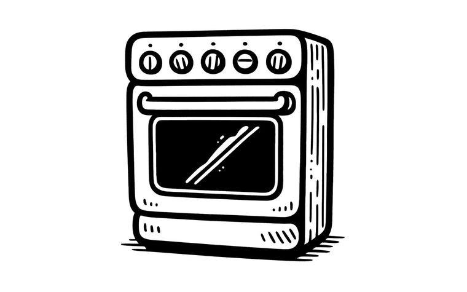
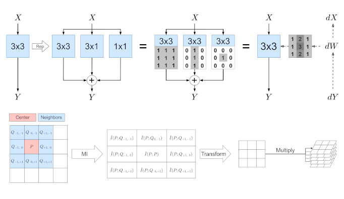
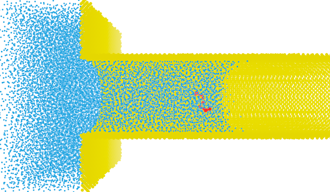

World models in deep learning
How a network turns raw experience into a usable internal model.
PhD Student · Computation & Neural Systems · Caltech
I study how neural networks build world models — how local observations are glued into a coherent global picture of the world.
In the Thomson Lab.
I'm a PhD student in Computation & Neural Systems at Caltech, advised by Prof. Matt Thomson. My research is on how deep learning builds world models. I'm drawn to the topological, geometric, and algebraic structure a model takes on as it learns, and what it reveals about how networks generalize.
Before Caltech I studied Engineering Physics and Mathematics at the University of Alberta. Earlier work spanned neural architecture search at Huawei, graph neural networks, computational nanofluidics, and experimental particle physics with the IceCube Neutrino Observatory.
I believe reasoning and mathematical structure — not pure empiricism — are the key to generalization and interpretability, and I want to build a rigorous, interpretable theory of how deep learning works. Long term, I'm aiming for a career in research and teaching.
I work where deep learning meets pure mathematics.
How a network turns raw experience into a usable internal model.
The shape of what a model learns — and how it mirrors the world it learned from.
When and why models generalize instead of memorizing — and what a real theory of it would take.
Why structure, not scale alone, leads to models we can understand and trust.

Preprint, arXiv:2409.13697
Converts a natural-language prompt into a targeted weight update, training a model to match the prompted distribution — giving durable behavioral control, stronger zero-shot reasoning from baked chain-of-thought, and continual "knowledge baking."

International Conference on Learning Representations (ICLR), 2023
Shows that structural reparameterization is equivalent to a spatial scaling of gradients, explaining why it accelerates CNN training — and turns that into an analytical method for finding high-performing reparameterizations, with ~2× faster training.

Canadian Society for Mechanical Engineering (CSME), 2022
A molecular- and Langevin-dynamics study of how a single polymer is drawn into a nanocapillary, identifying a maximum mean first-passage time with practical engineering implications.
Full list on Google Scholar.
California Institute of Technology · Prof. Matt Thomson
Studying world-model learning in transformers, and the structure that emerges in their representations.
University of Alberta · Prof. Di Niu
Developed methods for robust, global-level GNN explanations that stay faithful under distribution shift — including a closed loop between learned models and interpretable symbolic expressions.
Huawei Research · Prof. Di Niu & Dr. Mohammad Salameh
Led a direction on the learning dynamics of CNNs under reparameterization (→ ICLR 2023) and worked on hardware-aware NAS and graph-level optimizers for NPUs.
University of Alberta · Prof. Wylie Stroberg
Molecular- and Langevin-dynamics simulations of polymer imbibition into nanotubes (LAMMPS, Julia), using stochastic-process theory to find a maximum mean first-passage time.
University of Alberta & IceCube Observatory · Prof. Juan Pablo Yáñez
Calibrated digital optical modules using Cherenkov radiation from atmospheric muons, and built a Python library for particle-track filtering.